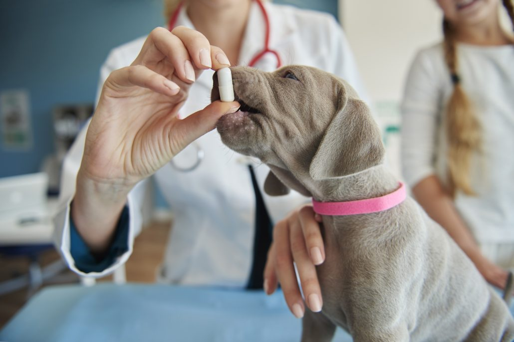
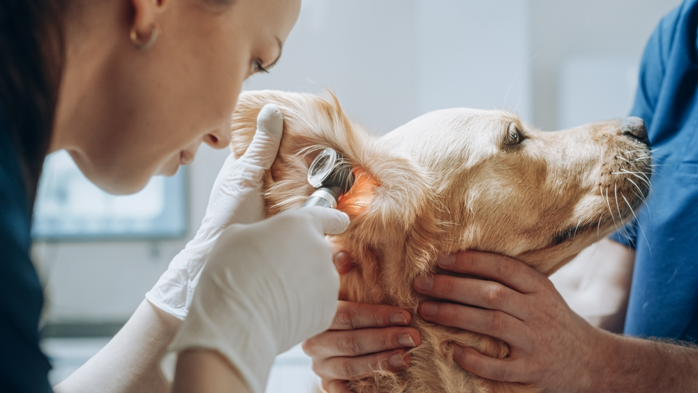

Veterinary Care
Deeper Care For Your Pets
What does our veterinary care entail?
In this section, you will find recommendations from our veterinarians. You can consult descriptions of each animal medications, and information regarding their purpose.
Learn more about our service...
The Importance of Following a Veterinary Diagnosis
Strict adherence to veterinary guidelines is one of the most critical and important factors when treating any animal with medication. Unlike humans, animals metabolize drugs very differently depending on their species, weight, and general health status, which is why you should never self-diagnose or guess the dosages.
Correct Administration of Medication
- Respect the administration route: Apply medications exactly as prescribed by the veterinarian, whether they are oral (syrups, tablets), topical (creams, spot-ons), or injectable.
- Technique for tablets: Hide pills inside small portions of wet food or special treats if the animal resists taking them directly.
- Consistency in timing: Maintain regular intervals between doses to ensure that drug levels in the animal's system remain stable and effective
Successful treatment depends entirely on precision and consistency. Ensuring the medication enters the animal's system via the correct route, at the exact scheduled time, and without skipped doses is what ultimately allows the therapy to fight the illness effectively.

Monitoring and Side Effect Management
- Continuous observation: Closely monitor the animal’s behavior during the first few hours after administration to detect any signs of allergic reactions or intolerance.
- Watch for common symptoms: Keep an eye out for frequent side effects such as lethargy, loss of appetite, vomiting, or diarrhea.
- Complete the full course: Never stop the medication early, even if the animal shows significant improvement, especially when dealing with antibiotics.
Observation is your most powerful tool during recovery. Completing the full treatment course while actively watching for changes in behavior or physical symptoms ensures that side effects are caught early and that the illness does not return stronger.

Safety and Storage
- No self-medication: Never use human medications (such as paracetamol, acetaminophen, or ibuprofen) as many are highly toxic and potentially fatal to dogs, cats, and other species.
- Proper storage: Keep all pharmaceuticals in cool, dry places entirely out of reach of both animals and children.
Prevention is the foundation of animal safety. Keeping human medications strictly away from pets and storing veterinary drugs securely eliminates the risk of accidental poisoning, which is often much more dangerous than the original medical condition.
Example
text
Schedule an Appointment
By submitting the request for a veterinary consultation, you are agreeing to our terms and conditions.